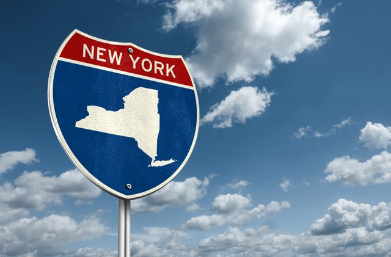

The Start
The People’s University of New York was founded on a simple but powerful idea: that education should be accessible, and focused on shaping the future. Established in response to the growing need for institutions that prioritize quality over quantity, PUNY was built to serve students with clear goals and bold ambitions.
In the early years, our founders—innovators, educators, and community leaders saw a need for a different kind of institution. They recognized that while traditional universities were expanding their offerings, many were losing sight of the purpose behind education: to equip students with the skills, knowledge, and mindset needed for success in the real world. This realization led to the creation of an institution built on the foundation of experiential learning, collaboration, and social impact.
Our Unique Vision
From the beginning, we chose a different path. One that values precision over expansion, innovation over tradition, and community over competition. Rather than offer dozens of programs across scattered departments, we’ve channeled our resources into two specialized schools: the Tate College of Technology and the Lewis College of Education. This deliberate structure empowers us to offer concentrated, highly impactful learning experiences.
Learning That Matters
Our mission is to cultivate a generation of thinkers, builders, and educators who are ready to shape the world. We believe in hands on experience and real world application. Every class, project, and partnership is designed with purpose, preparing students not just to graduate, but to lead with confidence and clarity.
At PUNY, we don’t aspire to be the largest university. We aim to be the most meaningful. That means smaller class sizes, deeper mentorship, and an environment where students are known by name and valued for their potential. Here, education is personal, and success is defined by impact, not just recognition.
Rooted in New York
The People’s University of New York is proud to call New York its home, grounded in its values: diversity, drive, and collaboration. Our location isn't just a backdrop, it’s the heart of who we are.
Our students come from across the world, drawn not by prestige, but by purpose. They leave not just with degrees, but with the skills and mindset to make a difference.